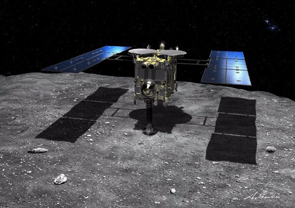
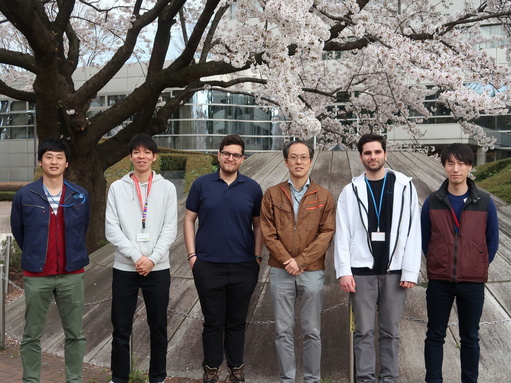

Welcome to Spaceflight Mechanics and Exploration Systems Laboratory
津田研究室は総合研究大学院大学および宇宙科学研究所(宇宙研)に所属しており, 宇宙研ならではの研究活動を行っています. 研究は，アストロダイナミクス（宇宙飛行力学）の実探査ミッションへの応用を中心とした研究をしています.深宇宙探査機・人工衛星の軌道設計，太陽系探査手法の研究，誘導・航法・制御、探査機システム設計について，実験的・解析的アプローチで取り組みます．
研究テーマは，常に実応用と物理原理の結びつきを意識したものを目指しています．これまで学生とともに創出してきた研究の関連プロジェクトは， 10cm級超小型衛星「キューブサット」の開発，観測ロケット・大気球を使ったソーラーセイル展開実験，小惑星探査機「はやぶさ」，小型ソーラー電力セイル実証機「イカロス」，小惑星探査機「はやぶさ２」など 研究室では, ISAS内でのプロジェクトを通じ, 実践的な研究/開発に携わることができます.
津田研究室に所属する学生は, 東京大学大学院の川口研究室・川勝研究室と共同で活動しており, 頼りになる先輩方や, 宇宙科学研究所におられる職員の方に研究相談を行なうことができる環境が整えられています. また, 研究だけでなく宇宙科学研究所でのプロジェクトに学生の内から積極的にかかわることができ, 大学の研究室では参加できない, ミッション作成やプロジェクトの検討に参加できます.
